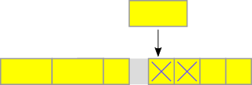
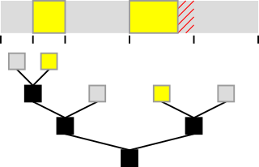

A memory pool contains a number of VkDeviceMemory blocks. The library automatically creates and manages default pool for each memory type available on the device. Default memory pool automatically grows in size. Size of allocated blocks is also variable and managed automatically.
You can create custom pool and allocate memory out of it. It can be useful if you want to:
- Keep certain kind of allocations separate from others.
- Enforce particular, fixed size of Vulkan memory blocks.
- Limit maximum amount of Vulkan memory allocated for that pool.
- Reserve minimum or fixed amount of Vulkan memory always preallocated for that pool.
To use custom memory pools:
- Fill VmaPoolCreateInfo structure.
- Call vmaCreatePool() to obtain VmaPool handle.
- When making an allocation, set VmaAllocationCreateInfo::pool to this handle. You don't need to specify any other parameters of this structure, like
usage.
Example:
You have to free all allocations made from this pool before destroying it.
Choosing memory type index
When creating a pool, you must explicitly specify memory type index. To find the one suitable for your buffers or images, you can use helper functions vmaFindMemoryTypeIndexForBufferInfo(), vmaFindMemoryTypeIndexForImageInfo(). You need to provide structures with example parameters of buffers or images that you are going to create in that pool.
When creating buffers/images allocated in that pool, provide following parameters:
VkBufferCreateInfo: Prefer to pass same parameters as above. Otherwise you risk creating resources in a memory type that is not suitable for them, which may result in undefined behavior. Using differentVK_BUFFER_USAGE_flags may work, but you shouldn't create images in a pool intended for buffers or the other way around.- VmaAllocationCreateInfo: You don't need to pass same parameters. Fill only
poolmember. Other members are ignored anyway.
Linear allocation algorithm
Each Vulkan memory block managed by this library has accompanying metadata that keeps track of used and unused regions. By default, the metadata structure and algorithm tries to find best place for new allocations among free regions to optimize memory usage. This way you can allocate and free objects in any order.

Sometimes there is a need to use simpler, linear allocation algorithm. You can create custom pool that uses such algorithm by adding flag VMA_POOL_CREATE_LINEAR_ALGORITHM_BIT to VmaPoolCreateInfo::flags while creating VmaPool object. Then an alternative metadata management is used. It always creates new allocations after last one and doesn't reuse free regions after allocations freed in the middle. It results in better allocation performance and less memory consumed by metadata.

With this one flag, you can create a custom pool that can be used in many ways: free-at-once, stack, double stack, and ring buffer. See below for details.
Free-at-once
In a pool that uses linear algorithm, you still need to free all the allocations individually, e.g. by using vmaFreeMemory() or vmaDestroyBuffer(). You can free them in any order. New allocations are always made after last one - free space in the middle is not reused. However, when you release all the allocation and the pool becomes empty, allocation starts from the beginning again. This way you can use linear algorithm to speed up creation of allocations that you are going to release all at once.

This mode is also available for pools created with VmaPoolCreateInfo::maxBlockCount value that allows multiple memory blocks.
Stack
When you free an allocation that was created last, its space can be reused. Thanks to this, if you always release allocations in the order opposite to their creation (LIFO - Last In First Out), you can achieve behavior of a stack.

This mode is also available for pools created with VmaPoolCreateInfo::maxBlockCount value that allows multiple memory blocks.
Double stack
The space reserved by a custom pool with linear algorithm may be used by two stacks:
- First, default one, growing up from offset 0.
- Second, "upper" one, growing down from the end towards lower offsets.
To make allocation from upper stack, add flag VMA_ALLOCATION_CREATE_UPPER_ADDRESS_BIT to VmaAllocationCreateInfo::flags.

Double stack is available only in pools with one memory block - VmaPoolCreateInfo::maxBlockCount must be 1. Otherwise behavior is undefined.
When the two stacks' ends meet so there is not enough space between them for a new allocation, such allocation fails with usual VK_ERROR_OUT_OF_DEVICE_MEMORY error.
Ring buffer
When you free some allocations from the beginning and there is not enough free space for a new one at the end of a pool, allocator's "cursor" wraps around to the beginning and starts allocation there. Thanks to this, if you always release allocations in the same order as you created them (FIFO - First In First Out), you can achieve behavior of a ring buffer / queue.

Pools with linear algorithm support lost allocations when used as ring buffer. If there is not enough free space for a new allocation, but existing allocations from the front of the queue can become lost, they become lost and the allocation succeeds.

Ring buffer is available only in pools with one memory block - VmaPoolCreateInfo::maxBlockCount must be 1. Otherwise behavior is undefined.
Buddy allocation algorithm
There is another allocation algorithm that can be used with custom pools, called "buddy". Its internal data structure is based on a tree of blocks, each having size that is a power of two and a half of its parent's size. When you want to allocate memory of certain size, a free node in the tree is located. If it's too large, it is recursively split into two halves (called "buddies"). However, if requested allocation size is not a power of two, the size of a tree node is aligned up to the nearest power of two and the remaining space is wasted. When two buddy nodes become free, they are merged back into one larger node.

The advantage of buddy allocation algorithm over default algorithm is faster allocation and deallocation, as well as smaller external fragmentation. The disadvantage is more wasted space (internal fragmentation).
For more information, please read "Buddy memory allocation" on Wikipedia or other sources that describe this concept in general.
To use buddy allocation algorithm with a custom pool, add flag VMA_POOL_CREATE_BUDDY_ALGORITHM_BIT to VmaPoolCreateInfo::flags while creating VmaPool object.
Several limitations apply to pools that use buddy algorithm:
- It is recommended to use VmaPoolCreateInfo::blockSize that is a power of two. Otherwise, only largest power of two smaller than the size is used for allocations. The remaining space always stays unused.
- Margins and corruption detection don't work in such pools.
- Lost allocations don't work in such pools. You can use them, but they never become lost. Support may be added in the future.
- Defragmentation doesn't work with allocations made from such pool.